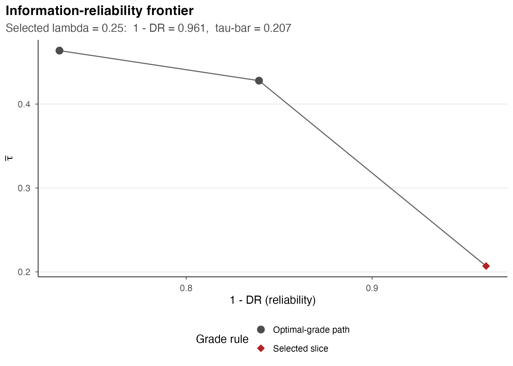

A2: The grading workflow — from estimates to a report card
JoonHo Lee
2026-06-06
Source:vignettes/a2-the-grading-workflow.Rmd
a2-the-grading-workflow.RmdAbstract
In A1 (getting started), one krw_report_card()
call ran the whole KRW pipeline and printed a finished report
card. This vignette opens the box. We load the bundled RACE fit
once and walk the seven stages one at a time, in order — precision
standardization → prior deconvolution → posterior shrinkage →
pairwise outranking → the grade integer program → the
information-reliability frontier → the assembled report card —
reading each stage’s output off the loaded fit as a call plus its
read. Only the grade step solves an integer program, so we show
those calls but read the proven result instead of re-solving. At
the end we recover the one-call shortcut and run the identical
workflow for gender.
1. From one call to seven stages
A1 ran the entire pipeline in a single line:
fit <- krw_report_card(
race, demographic = "race",
control = gp_control(backend = "gurobi", precision_rule = "krw_gmm",
lambda_grid = c(0.25, 0.5, 1)))That call hides seven KRW stages (Kline et al. 2024). This vignette opens the box and walks them in order, one stage per section. Each section has the same shape: the call you would write, and the read of what it produces.
We load the proven RACE fit once, here, and read every stage off it. Loading is instant because the fit is shipped pre-solved; nothing below re-solves.
fit <- gp_parity_fit("race")
fit
#> +------------------------------------------------------------------------+
#> | gp_fit . 97 units . grades: 3 (2/81/14) . selected lambda = 0.25 |
#> +------------------------------------------------------------------------+
#> | units : 97 |
#> | grades : 3 (2/81/14) |
#> | reliability: (1 - DR) = 0.96 tau-bar = 0.21 |
#> | backend : gurobi |
#> +------------------------------------------------------------------------+
#> i summary(fit) for backend/selection details; get_report_card(fit) for the ranked table.The console box is the destination: 97 firms sorted into three grades
(2 / 81 / 14) at the KRW baseline
lambda = 0.25, with reliability 0.96 and
tau-bar = 0.21. The rest of this vignette is the road
there.
A note on speed and honesty. Reading a finished stage off the loaded fit is fast, so those chunks are evaluated. The only functions that solve the grade integer program —
gp_grade(),gp_grade_path(), andkrw_report_card()— take minutes on 97 firms, so they appear aseval = FALSEcode you could run, and we read the already-solved result instead.
2. The input
A report card needs only two per-firm vectors: the estimated gap and
its standard error. For RACE that is the White-minus-Black callback gap
and its SE, one pair per firm. The headline RACE result is driven by
KRW’s real per-firm beta-GMM series, shipped under
inst/extdata/krw-gmm-input/:
gmm <- read.csv(system.file("extdata/krw-gmm-input/theta_estimates_matlab_race.csv",
package = "gradepath"), header = FALSE)
race <- list(theta_hat = gmm[[2]], s = gmm[[3]]) # 97 firms: gap + SEThe public krw_firms dataset carries the same
shape and is handy for trying the API, but it is an example on
a different numeric scale and does not reproduce the
published 2 / 81 / 14. The loaded fit already
carries this input on its estimates slot, so every read
below works directly off fit.
3. Stage 1 — precision standardization (beta-GMM)
The first stage puts every firm’s gap on a common precision scale. KRW model the observed estimate as , so the standard error enters with an estimated exponent rather than being assumed away. That exponent is the beta-GMM estimate; it lives in the prior’s metadata:
gradepath lands on
,
matching the 0.510 KRW report. A value near
says precision scales close to the square root of
:
noisier firms are standardized more strongly before any comparison is
made. The rest of pr$metadata (the characteristic, carrier
count, support points, and the deconvolution’s alpha)
records the stage’s bookkeeping.
4. Stage 2 — deconvolving the prior
The same pr object carries the second stage’s output.
From the standardized estimates the pipeline deconvolves the
prior distribution
of true gaps — it backs out the distribution of latent
that, blurred by sampling noise, would reproduce the spread of observed
estimates. The prior’s shape is flexibly estimated from the data rather
than imposed. The recovered prior is a grid (support)
carrying a mass (density):
prior_df <- data.frame(support = pr$support, density = pr$density)
head(prior_df)
#> support density
#> 1 0.000000000 0.001590074
#> 2 0.001341692 0.001596067
#> 3 0.002683385 0.001602082
#> 4 0.004025077 0.001608119
#> 5 0.005366769 0.001614178
#> 6 0.006708461 0.001620259
pr$scale # scale label: "r" (the r-scale), not a number
#> [1] "r"
w <- pr$density / sum(pr$density) # normalise the grid mass
spread <- sqrt(sum(w * (pr$support - pr$mean)^2)) # density-weighted SD of the prior
c(centre = pr$mean, spread = spread)
#> centre spread
#> 0.3243633 0.2205386pr$mean is the centre of that recovered prior, while
pr$scale is the scale label (here "r", the
r-scale) rather than a spread; the spread is the density-weighted
standard deviation of the support grid (the
spread computed in the chunk above). This distribution is
what the next stage shrinks toward: it encodes how much true variation
across firms the data actually support, separated from noise.
5. Stage 3 — posterior shrinkage
With the prior in hand, the third stage produces each firm’s posterior: it combines the firm’s own noisy estimate with the prior to get a shrunken gap and a credible interval.
post <- get_posterior(fit)
head(as.data.frame(post))
#> estimate se id label posterior_mean posterior_sd
#> 1 0.83306863 0.2964393 krw_race_001 krw_race_001 0.4930476 0.2219116
#> 2 0.31162778 0.2196911 krw_race_002 krw_race_002 0.2957276 0.1429102
#> 3 0.47406122 0.2609278 krw_race_003 krw_race_003 0.3543188 0.1605673
#> 4 0.09661802 0.3451006 krw_race_004 krw_race_004 0.2536574 0.1528156
#> 5 0.43743703 0.3334386 krw_race_005 krw_race_005 0.3302823 0.1713923
#> 6 -0.19290522 0.1788970 krw_race_006 krw_race_006 0.1021265 0.0815843
#> lower upper scale metadata.level metadata.interval_level
#> 1 0.181128459 0.9391846 r 0.9 0.9
#> 2 0.064401230 0.5353352 r 0.9 0.9
#> 3 0.093918460 0.6185201 r 0.9 0.9
#> 4 0.030858923 0.5205766 r 0.9 0.9
#> 5 0.064401230 0.6144951 r 0.9 0.9
#> 6 0.006708461 0.2616300 r 0.9 0.9
#> metadata.reporting.posterior_mean metadata.reporting.posterior_sd
#> 1 0.13939970 0.06274123
#> 2 0.06124555 0.02959688
#> 3 0.08773923 0.03976095
#> 4 0.08398485 0.05059657
#> 5 0.10551823 0.05475621
#> 6 0.01708589 0.01364916
#> metadata.reporting.lower metadata.reporting.upper metadata.reporting.scale
#> 1 0.051210581 0.26553635 theta
#> 2 0.013337575 0.11086859 theta
#> 3 0.023256834 0.15316286 theta
#> 4 0.010217253 0.17236062 theta
#> 5 0.020574834 0.19631821 theta
#> 6 0.001122335 0.04377105 theta
#> metadata.reporting.level metadata.has_reporting
#> 1 0.9 TRUE
#> 2 0.9 TRUE
#> 3 0.9 TRUE
#> 4 0.9 TRUE
#> 5 0.9 TRUE
#> 6 0.9 TRUEThe columns to compare are estimate (the raw gap) and
posterior_mean (the shrunken gap). The distance between
them is empirical Bayes at work: a firm measured imprecisely (large
se) is pulled harder toward the prior centre, because its
own estimate carries less information; a precisely measured firm barely
moves. The lower/upper columns are the
credible interval the report card will display as-is.
6. Stage 4 — pairwise outranking (Pi)
The fourth stage turns 97 posteriors into a social-choice object. For every ordered pair of firms it computes , the posterior probability that firm ’s true gap exceeds firm ’s. The result is a matrix:
pw <- get_pairwise(fit)
pw$matrix[1:5, 1:5]
#> krw_race_001 krw_race_002 krw_race_003 krw_race_004 krw_race_005
#> krw_race_001 0.5000000 0.8912488 0.7623452 0.7589266 0.6559360
#> krw_race_002 0.1087512 0.5000000 0.2996195 0.3715744 0.2459148
#> krw_race_003 0.2376548 0.7003805 0.5000000 0.5365897 0.4039615
#> krw_race_004 0.2410734 0.6284256 0.4634103 0.5000000 0.3848517
#> krw_race_005 0.3440640 0.7540852 0.5960385 0.6151483 0.5000000An entry near
says the posterior strongly orders that row’s firm above that column’s
firm; an entry near
says the data cannot separate them. The companion pw$ids
holds the firm identifiers in matrix order. The standalone recomputation
from a posterior is a fast one-liner, should you want it:
gp_pairwise(get_posterior(fit)) # recompute Pi from the posterior (fast)The matrix Pi is the only thing the grade integer
program reads. It carries no ranking-superiority statement of any kind —
only pairwise posterior order.
7. Stage 5 — the grade integer program
The fifth stage is the one that solves. It sorts the firms into a
small number of contiguous integer grades
by solving an integer program over Pi, penalized by
:
larger
lowers the separation threshold
and yields more, finer grades; smaller
raises the threshold and pools units into fewer, coarser grades. The
calls you would write are:
# Solve the whole path over a lambda grid (the engine the pipeline uses):
path <- gp_grade_path(get_pairwise(fit),
lambda_grid = c(0.25, 0.5, 1), control = gp_control())
# Or solve a single penalty in isolation:
gp_grade(get_pairwise(fit), lambda = 0.25)Both solve an integer program over 97 firms (minutes with Gurobi), so we do not run them here. We read the already-solved assignment off the loaded fit instead:
table(get_grades(fit)) # the grade composition: 2 / 81 / 14
#>
#> 1 2 3
#> 2 81 14
fit$selected_grade$lambda # the selected penalty
#> [1] 0.25The fit$selected_grade slot is the assignment chosen at
the selected penalty, the gp_grade_fit at
lambda = 0.25. Two firms land in the most-extreme grade, 81
in the middle, 14 in the least-extreme — the published
2 / 81 / 14. Grade 1 is simply the most-extreme
block; the label is an integer, not a verdict.
8. Stage 6 — the information-reliability frontier
The sixth stage reports the cost of compression. Each
penalty
on the grid yields one grade count, and with it a discordance rate (the
share of comparable pairs the grades run against) and
tau_bar (the average between-grade separation). The
frontier table — one row per penalty — is cached on the solved path, so
reading it is instant:
s <- fit$grade_path$summary
sel <- s[abs(s$lambda - 0.25) < 1e-8, ]
sel[, c("lambda", "grade_count", "discordance_rate", "reliability", "tau_bar")]
#> lambda grade_count discordance_rate reliability tau_bar
#> 1 0.25 3 0.03869221 0.9613078 0.2069798At lambda = 0.25 reliability is
and tau-bar
:
the three grades agree with the underlying posterior ordering on about
96% of comparable pairs. Moving along
trades grade count against reliability — that trade-off is the
frontier.
To plot it, assemble a gp_frontier object; it is a fast
read that does not solve. Do not call
as.data.frame() on it — read
fit$grade_path$summary for the numbers, as above, and use
the object only to plot:
fr <- gp_frontier(fit$grade_path, pairwise = get_pairwise(fit))
gp_plot_frontier(fr)
The information-reliability frontier for the RACE fit (KRW Figure 6b): each point is one penalty on the lambda grid, plotted by its average between-grade separation against its reliability (1 - discordance rate). The selected lambda = 0.25 grading sits on this frontier.
9. Stage 7 — the report card
The final stage assembles everything into the per-firm card: each
firm with its grade label, its posterior summary, its credible interval,
and its original estimate, sorted from most-extreme to least-extreme.
get_report_card(fit) returns that assembled card; for your
own joins and plots, as.data.frame(fit) gives the same
content as a tidy 97 × 10 table, grade 1 first:
head(as.data.frame(fit), 8)
#> id label grade sort_rank selected_lambda posterior_mean
#> 1 krw_race_062 krw_race_062 1 1 0.25 0.2498718
#> 2 krw_race_015 krw_race_015 1 2 0.25 0.2328297
#> 3 krw_race_017 krw_race_017 2 3 0.25 0.1907685
#> 4 krw_race_037 krw_race_037 2 4 0.25 0.1877637
#> 5 krw_race_095 krw_race_095 2 5 0.25 0.1870007
#> 6 krw_race_010 krw_race_010 2 6 0.25 0.1775977
#> 7 krw_race_085 krw_race_085 2 7 0.25 0.1698248
#> 8 krw_race_088 krw_race_088 2 8 0.25 0.1672324
#> lower upper estimate se
#> 1 0.11742058 0.3424767 0.3303573 0.0713513
#> 2 0.08092269 0.4474549 0.4332195 0.1308592
#> 3 0.03242811 0.3827927 0.3772942 0.2828115
#> 4 0.03993012 0.3950010 0.4022631 0.2158661
#> 5 0.03117536 0.3726872 0.3499199 0.2856306
#> 6 0.03232195 0.3523093 0.3431389 0.2385807
#> 7 0.02297781 0.3417023 0.1686227 0.3120664
#> 8 0.02915253 0.3276491 0.2950459 0.2294773The columns are id, label,
grade, sort_rank,
selected_lambda, posterior_mean,
lower, upper, estimate, and
se. The standalone assembler builds the same card from the
stage slots, and like the reads above it does not
solve:
gp_report_card(
estimates = fit$estimates,
posterior = get_posterior(fit),
selected_grade = fit$selected_grade,
grade_path = fit$grade_path)The signature figure is the card itself (KRW Figure 7) — each firm’s posterior gap with its interval, ranked and coloured by grade:

The RACE report card (KRW Figure 7): each of the 97 firms shown as its posterior White-minus-Black callback gap (point) with its credible interval (horizontal line), one firm per row, ranked with the most-extreme firm on top and coloured by its grade (2 / 81 / 14).
10. All in one
The seven stages of sections 3–9 are exactly what
krw_report_card() chains in a single call. Section 1’s
one-liner is this whole walk, run end to end:
fit <- krw_report_card(
race, demographic = "race",
control = gp_control(backend = "gurobi", precision_rule = "krw_gmm",
lambda_grid = c(0.25, 0.5, 1))) # the grid must include 1That call performs precision standardization → prior deconvolution →
posterior shrinkage → the pairwise matrix → the grade integer program →
the frontier → the report card, and returns the same gp_fit
we loaded in section 1. Use the one-call form in practice; reach for the
stage accessors of this vignette when you want to inspect or export an
intermediate object.
11. The same workflow for gender
Nothing about the seven stages is specific to race. Swap the demographic and the identical pipeline runs on the gender callback gap. The bundled gender fit reads exactly like the race fit:
gfit <- gp_parity_fit("gender")
round(get_prior(gfit)$metadata$beta, 4) # the gender precision exponent
#> [1] 1.2554
table(get_grades(gfit)) # the gender grade composition
#>
#> 1 2 3 4
#> 1 3 89 4The gender fit sorts the firms into four grades
(1 / 3 / 89 / 4) with
.
The welfare reading of grade 1 follows the application, so the labels
are never hard-coded to one interpretation; every stage accessor of
sections 3–9 — get_prior(), get_posterior(),
get_pairwise(), get_grades(),
get_report_card() — works identically on
gfit.
12. Where to next
- Reading and exporting — A3 goes deeper on the accessors, the tidy table, and CSV / round-trip export.
- Figures — A4 is the full cookbook for all four KRW signature figures (frontier, posterior contrast, report card, discordance).
- Solvers and calibration — A5 covers the open-source backends and the calibration harness.
-
Foundations —
vignette("m1-foundations-and-notation")formalizes the estimate → rank → grade pipeline and the notation this vignette kept light. -
Method track, stage by stage —
vignette("m2-precision-and-standardization")derives the standardization of section 3;vignette("m3-deconvolution-and-posterior")derives the deconvolution and shrinkage of sections 4–5;vignette("m4-grading-frontier-and-report-cards")derives the integer program, frontier, and report card of sections 6–9; andvignette("m5-two-level-and-calibration")covers the two-level extension and calibration.
A reminder on reading the grades honestly: a grade is a sorting of
firms by posterior evidence, never a contest. The one-level race and
gender core is accepted within its declared scope, and the numbers here
match the paper
(
vs the reported 0.510;
is the KRW baseline).
Provenance
sessionInfo()
#> R version 4.6.0 (2026-04-24)
#> Platform: aarch64-apple-darwin23
#> Running under: macOS Tahoe 26.2
#>
#> Matrix products: default
#> BLAS: /Library/Frameworks/R.framework/Versions/4.6/Resources/lib/libRblas.0.dylib
#> LAPACK: /Library/Frameworks/R.framework/Versions/4.6/Resources/lib/libRlapack.dylib; LAPACK version 3.12.1
#>
#> locale:
#> [1] en_US/en_US/en_US/C/en_US/en_US
#>
#> time zone: America/Chicago
#> tzcode source: internal
#>
#> attached base packages:
#> [1] stats graphics grDevices utils datasets methods base
#>
#> other attached packages:
#> [1] ggplot2_4.0.3 gradepath_0.5.0
#>
#> loaded via a namespace (and not attached):
#> [1] Matrix_1.7-5 ebrecipe_0.5.0 gtable_0.3.6 jsonlite_2.0.0
#> [5] dplyr_1.2.1 compiler_4.6.0 tidyselect_1.2.1 slam_0.1-55
#> [9] dichromat_2.0-0.1 jquerylib_0.1.4 splines_4.6.0 systemfonts_1.3.2
#> [13] scales_1.4.0 textshaping_1.0.5 yaml_2.3.12 fastmap_1.2.0
#> [17] lattice_0.22-9 R6_2.6.1 labeling_0.4.3 generics_0.1.4
#> [21] knitr_1.51 htmlwidgets_1.6.4 gurobi_13.0-1 tibble_3.3.1
#> [25] desc_1.4.3 bslib_0.11.0 pillar_1.11.1 RColorBrewer_1.1-3
#> [29] rlang_1.2.0 cachem_1.1.0 xfun_0.57 fs_2.1.0
#> [33] sass_0.4.10 S7_0.2.2 otel_0.2.0 cli_3.6.6
#> [37] withr_3.0.2 pkgdown_2.2.0 magrittr_2.0.5 digest_0.6.39
#> [41] grid_4.6.0 lifecycle_1.0.5 vctrs_0.7.3 evaluate_1.0.5
#> [45] glue_1.8.1 farver_2.1.2 ragg_1.5.2 rmarkdown_2.31
#> [49] tools_4.6.0 pkgconfig_2.0.3 htmltools_0.5.9